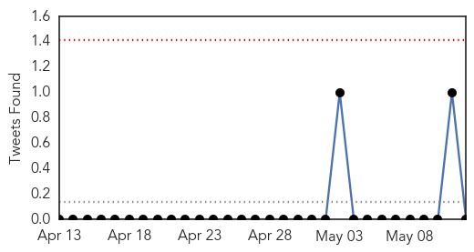
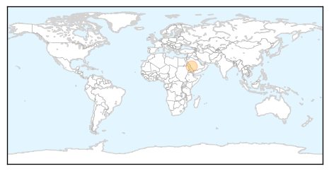
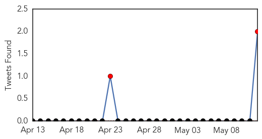
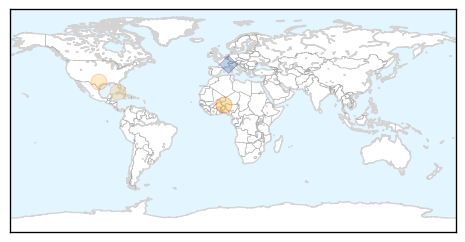

MERS
30-Day Web Trend
0 alerts, 0 warnings
30-Day Twitter Trend
0 alerts, 0 warnings

Article Locations
Article Confidences

Top Articles:
Top Tweets:
-
No tweets found for May 12, 2015
Meningitis
30-Day Web Trend
2 alerts, 0 warnings

30-Day Twitter Trend
2 alerts, 0 warnings

Article Locations
Article Confidences
Top Articles:
Top Tweets:
- 0.655
- Laboratory tests have confirmed the predominance of meningitis C in the current outbreak in Niger with meningitis W also present
- 0.532
- Since MenAfrivac’s introduction in 2010 over 215 million people have been vaccinated in 15 "meningitis-belt" countries in Africa